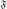
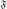

Next: The new protocol in Up: The new model-free optimisation Previous: The universal solution U Contents Index
![\includegraphics[
width=0.8\textwidth,
bb=0 0 461 697
]{images/model_free/new_protocol}](img97.svg)
|
A different approach was proposed in d'Auvergne and Gooley (2008c) for finding the universal solution
 of the extremely complex, convoluted model-free optimisation and modelling problem (d'Auvergne and Gooley, 2007), defined as
of the extremely complex, convoluted model-free optimisation and modelling problem (d'Auvergne and Gooley, 2007), defined as
This notation says that the minimised parameter vector within the space
 which minimises the common Kullback-Leibler discrepancy
ΔK-L is selected from the universal set
which minimises the common Kullback-Leibler discrepancy
ΔK-L is selected from the universal set
 as the universal solution
.
The discrepancy of Kullback and Leibler (1951) is a measure of how well the model fits the data, in this case how well the global model
of the diffusion tensor together with the model-free models of all residues fits the relaxation data.
This selection is subject to the condition that
as the universal solution
.
The discrepancy of Kullback and Leibler (1951) is a measure of how well the model fits the data, in this case how well the global model
of the diffusion tensor together with the model-free models of all residues fits the relaxation data.
This selection is subject to the condition that
 is the argument or specific parameter vector which minimises the chi-squared function
χ2(θ) such that θ is an element of the space
.
Whereas the minimisation of the continuous chi-squared function within the single space
belongs to the mathematical field of optimisation (Nocedal and Wright, 1999), the selection of the universe
which minimises the discrepancy belongs to the statistical field of model selection (d'Auvergne and Gooley, 2003; Zucchini, 2000; Schwarz, 1978; Akaike, 1973; Linhart and Zucchini, 1986).
is the argument or specific parameter vector which minimises the chi-squared function
χ2(θ) such that θ is an element of the space
.
Whereas the minimisation of the continuous chi-squared function within the single space
belongs to the mathematical field of optimisation (Nocedal and Wright, 1999), the selection of the universe
which minimises the discrepancy belongs to the statistical field of model selection (d'Auvergne and Gooley, 2003; Zucchini, 2000; Schwarz, 1978; Akaike, 1973; Linhart and Zucchini, 1986).
This new model-free optimisation protocol incorporates the ideas of the local τm model-free model (Barbato et al., 1992; Schurr et al., 1994) and the optimisation of the diffusion tensor using information from these models, analogously to the linear least-squares fitting of the quadric model (Brüschweiler et al., 1995; Lee et al., 1997).
The protocol also follows the lead of the model-free optimisation protocol presented in Butterwick et al. (2004) whereby the diffusion seeded paradigm was reversed.
Rather than starting with an initial estimation of the global diffusion tensor from the set
 the protocol starts with the model-free parameters from
.
the protocol starts with the model-free parameters from
.
The first step of the Butterwick et al. (2004) protocol is the reduced spectral density mapping of Farrow et al. (1995).
As Rex has been eliminated from the analysis, three model-free models corresponding to tm1, tm2, and tm5 (Models 7.23.1, 7.23.2, and 7.23.5 on page ![[*]](crossref.png) ) are employed.
The model-free parameters are optimised using the reduced spectral density values and the best model is selected using F-tests.
The spherical, spheroidal, and ellipsoidal diffusion tensors are obtained by linear least-squares fitting of the quadric model of Equation (7.36) using the local τm values (Brüschweiler et al., 1995; Lee et al., 1997).
The best diffusion model is selected via F-tests and refined by iterative elimination of spins systems with high chi-squared values.
This tensor is used to calculate local τm values for each spin system, approximating the multiexponential sum of the Brownian rotational diffusion correlation function with a single exponential, using the quadric model of Equation (7.36).
In the final step of the protocol these τm values are fixed and m1, m2, and m5 (Models 7.22.1, 7.22.2, and 7.22.5 on page ) are optimised and the best model-free model selected using F-tests.
) are employed.
The model-free parameters are optimised using the reduced spectral density values and the best model is selected using F-tests.
The spherical, spheroidal, and ellipsoidal diffusion tensors are obtained by linear least-squares fitting of the quadric model of Equation (7.36) using the local τm values (Brüschweiler et al., 1995; Lee et al., 1997).
The best diffusion model is selected via F-tests and refined by iterative elimination of spins systems with high chi-squared values.
This tensor is used to calculate local τm values for each spin system, approximating the multiexponential sum of the Brownian rotational diffusion correlation function with a single exponential, using the quadric model of Equation (7.36).
In the final step of the protocol these τm values are fixed and m1, m2, and m5 (Models 7.22.1, 7.22.2, and 7.22.5 on page ) are optimised and the best model-free model selected using F-tests.
The new model-free protocol built into relax utilises the core foundation of the Butterwick et al. (2004) protocol yet its divergent implementation is designed to solve the universal equation of d'Auvergne and Gooley (2007) to find
(Equation 7.37).
Models tm0 to tm9 (7.23.0-7.23.9 on page ) in which no global diffusion parameters exist are employed to significantly collapse the complexity of the problem.
Model-free minimisation (d'Auvergne and Gooley, 2008b), model elimination (d'Auvergne and Gooley, 2006), and then AIC model selection (d'Auvergne and Gooley, 2003; Akaike, 1973) can be carried out in the absence of the influence of global parameters.
By removing the local τm parameter and holding the model-free parameter values constant these models can then be used to optimise the diffusion parameters of
.
Model-free optimisation, model elimination, AIC model selection, and optimisation of the global model
is iterated until convergence.
The iterations allow for sliding between different universes
to enable the collapse of model complexity, to refine the diffusion tensor, and to find the solution within the universal set
.
The last step is the AIC model selection between the different diffusion models.
Because the AIC criterion approximates the Kullback-Leibler discrepancy (Kullback and Leibler, 1951), central to the universal solution of Equation (7.37), it was chosen for all three model selection steps over BIC model selection (d'Auvergne and Gooley, 2003; Schwarz, 1978; Chen et al., 2004).
The new protocol avoids the problem of under-fitting whereby artificial motions appear, avoids the problems involved in finding the initial diffusion tensor within
, and avoids the problem of hidden internal nanosecond motions and the inability to slide between universes to get to
(see d'Auvergne and Gooley (2007) for more details).
The full protocol is summarised in Figure 7.3.

 =
=  ∈, s.t.
∈, s.t.  χ2(θ) : θ∈.
χ2(θ) : θ∈.